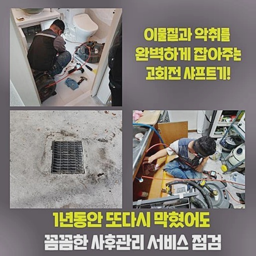
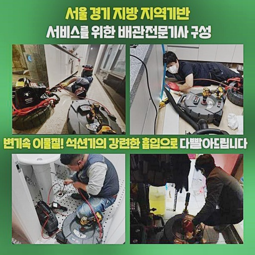
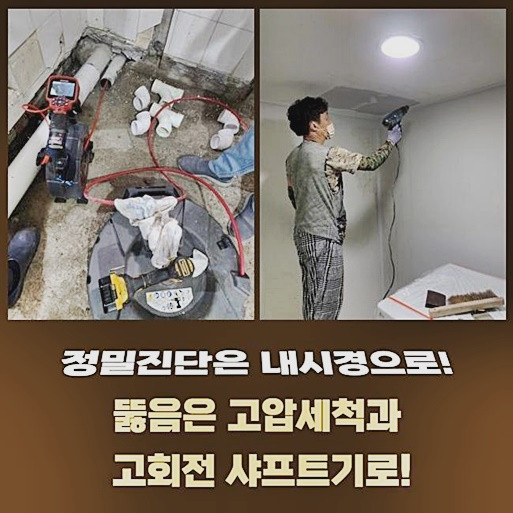
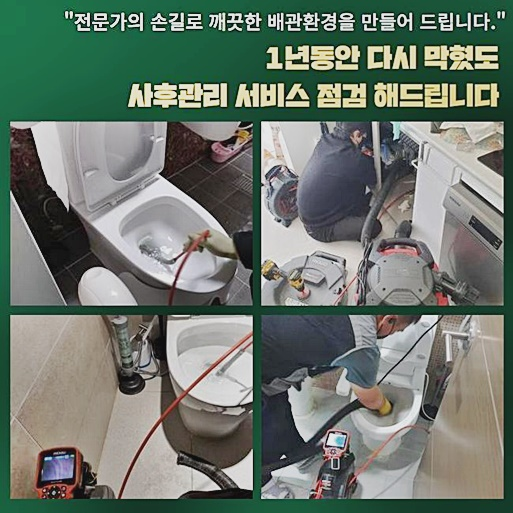
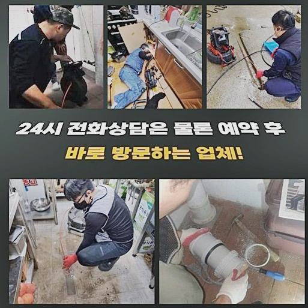
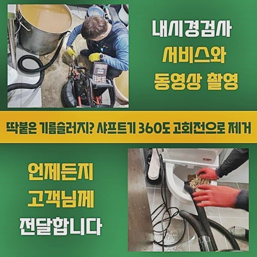

🏠 성동구 마장동씽크대배수관막힘 성수동 하수관고압세척 배관전문
용인시 처인구 배관막힘 전문 시공 후기

📋 작업 개요
- 위치: 용인시 처인구, 수원시 영통구, 화성시 동탄
- 서비스 유형: 배관막힘, 누수수리, 고압세척, 내시경점검
- 작업 일시:
- 업체명: 하수구수사대 (010-5615-2118)
🔍 문제 상황
성동구 마장동씽크대배수관막힘 성수동 하수관고압세척 배관전문
생활하는 환경 내에서도 물을 많이 틀게 되는 욕실이나 싱크대같은 경우는 물의 공급이 중단되는 것도 어려움이 많겠지만 이용한 하수의 이동이 제한이 걸리는 것 역시 여러 활동을 하는 데에 막대한 악영향을 끼치는 중대한 이슈인데요
이번에 알려드릴 현장은 모든 배관들에서 고장 증세가 있으면서도 오염수가 범람하는 사건까지도 여러 수십개의 화장실에서 속속들이 나오고 있다며 다급히 방문해달라 말씀하셨죠
다수의 호실에서 난감함을 미치고 있으니 제일 빠르게 방문해주실 수 없냐고 간청하셨던 고객님이셔서 날이 바뀌면 빨리 찾아뵙기로 하고 첨단 장치들을 싣고 처리가 시급하다 하셨던 건물로 황급히 이동을 했습니다
이번 사례지와 같이 메인 관로가 마비된다면 고압세척이 들어가야 할 현장들이 대부분을 차지하기 때문에 준비하는 과정에서 적당한 가정용 고압세척 기계를 든든하게 마련을 했습니다
지역 내의 여러 업체 중에서 지인이 서비스에 대한 만족도를 내비친 저희에게 요청을 해주신 부분이었어요
언제부터 일이 생겼는지에 대한 문답을 나눠본 다음에 바로 조치 방안을 설립할 수 있도록 검토부터 순차적으로 실시해 보았습니다!
많은 호실 내에서 불편함을 호소하는데다가 소규모의 배관이 아니라 중앙배관 쪽에 곤란이 빚어진 사태일 경우에는 간단한 기술로는 처리가 안됩니다
그 예로는 흡입을 하는 석션 기계나 고형화된 물질을 점진적으로 긁어내는 샤프와 같은 장치들로 이러한 현상을 접근하기는 한계가 극명합니다

🔎 원인 분석
💡 전문가 진단: 정밀 진단 장비를 사용하여 슬러지의 고착 여부를 판명하고 타격/세척 작업을 실시했습니다.
더욱 강한 성능의 기계로 통수가 마비된 하수도를 개선하는 것이야말로 완성도 높은 방안이라고 할 수 있어요
배관이 깔려있는 슬라브층을 개방시켜서 메인 관로를 세부적으로 관측해 보았는데요
보수 작업이 처음이시라 한참을 기다려야 한다거나 무리한 비용이 요구되는 공사가 되면 어쩌나 고객님께서 식은땀을 흘리시면서 속앓이를 하시는 듯 했습니다
얼마나 손상됐는지 세부적으로 들여다 봐야 정확하겠지만 늦은 시간대에 진입하기 전에 용납 가능한 공사비용으로 보완을 해드리니 걱정 마시라고 먼저 이야기를 전하고 시공에 대한 이해도를 높이기 위해서 어떠한 수단으로 절차들이 이어질 것인지에 대한 설명도 덧붙여 드렸습니다
하수구는 워낙 까다롭기에 다년간의 경력을 보유하는 실력자라고 할지라도 실제 눈으로 관찰하기는 제한이 분명하기 때문에 얇은 파이프라인에도 수월하게 진입하여 문제점에 대한 판단을 해주는 내부 관찰용 카메라가 어두운 통로를 밝혀줘야 해요
무슨 트러블이 나서 막힘 증세가 형성되고만 것인지와 어떤 깊이에 있는 지대까지 더러워져 있는지 디테일하게 감지하기 위해 진단 기기를 작동시킨 후 심층부까지 진입을 시켰어요
가늠할 수 없는 깊이까지도 내시경을 들여보내서 현황을 체크해 보았더니 공용 배관으로 쓰는 굵은 관로에 끈적하게 슬러지화된 물질 및 폐기름이 산적한 물질들로 인해 메워진 채로 통로를 틀어막고 있는 것이었어요
숨 구멍도 없이 메워진 상태임을 선보여드리니 난감해 하시면서 보기만 해도 답답해지는 크기의 찌꺼기 더미가 존재한다는 사실은 예측도 못해본 것이라 하셨네요
엉망진창이니까 당연히 막히는 게 당연하다고 말씀하셨고 중요한 시설인데 관리를 소홀히한게 아닌가 후회된다고 솔직한 속내를 이야기 해주셨어요

🔧 작업 과정
제대로 청소를 부탁드린다 하시면서 넉넉하게 작업시간을 잡으라고 말씀주셨고 뚫음 업무를 할 근방에 방수 비닐을 펼쳐서 보양 절차를 거쳤어요
보양 없이도 작업은 되겠지만 내부에 대한 타격을 가하면서 폭포처럼 오염물질이 쏟아져 내려서 부패로 인한 독한 냄새를 퍼뜨릴 위험이 있으니 불필요한 데미지를 주지 않도록 작업에 따른 준비 단계도 구제책을 마련하면 도움이 됩니다
깔려있는 배관 자재가 길게 늘어진 형상이니 끝과 끝 뿐만 아니라 중간지대도 정화작업을 들어가야 한다는 목적성이 생겨서 관로 탐사기를 틀어서 하수구가 깔린 모양을 밑그림을 그리는 작업도 세심하게 들어갔습니다
메인 배관의 굵은 줄기에서 세밀하게 얇은 배관들로 배분이 되는 구조인데 하나의 파이프만 뚫어준다고 하더라도 다른 쪽 측면에서 이렇다할 개선을 보지 못합니다
보완을 들어가야만 하는 섹션들을 빠지지 않고 일일이 뚫어줘야 하는 단계가 필요한 것입니다
배관의 컨디션과 모양에 대한 이해를 모두 마무리를 해준 다음에 배수로의 진입 지점에서 강한 물의 힘을 빌리는 고압세척기로 인한 작업을 원활하게 이어가게 됐습니다!
응축된 힘이 있는 고압의 물을 활용해서 막힌 곳을 해소하는 단계로 더러운 이물질이 말끔하게 없어질 때까지 우직하게 진행하는 끈기가 필요합니다
현장의 심각도에 따라서 작업시간이 길거나 짧아지겠지만 완성도를 높이려면 시간을 꽤 투자해야 합니다
물의 압력 수치를 정하는 것도 섬세하게 가해야 하는데 심지어 세월을 오래 감당한 배관일 경우에는 손상을 입을 가능성이 많기 때문입니다
오늘의 사례에서는 특히 앞서 배관에 대한 청소를 수행했던 전적이 없었던 탓에 누적되어 카메라로 찍어서 본 하수구의 내부 모습은 집채만한 크기로 집합된 노폐물들이 덕지덕지 붙어있었어요
청소 와중에도 내시경을 순간적으로만 활용하는 게 아니라 배관 벽에 다치지 않는지와 어느정도 청소가 진행되었는지를 보면서 동일한 정화 작업을 나아가기 때문에 그러니 하수도 공사를 하다가 배관이 파손되거나 데미지를 입는 사건이 조성되면 어떻게하나 하는 등의 걱정은 붙들어매셔도 됩니다
끈기 있게 끌고 온 세척을 해주었더니 마침내 깨끗해진 결과물을 선사할 수 있었고 기능도 온전히 되돌리게 됐습니다!
작업 동안 옆에서 함께한 고객님도 시원하게 변화한 하수도를 보시곤 오랜시간 매달려 주시고 냄새까지 다 잡아주셔서 만족 그 자체라고 엄지를 들어주셨네요!
최종 마무리로 통수 테스트까지 진행하고 남아있는 잔량은 없는지 진단을 해보고 나서 기타 설비적 이슈는 없는지 짐작해 보게 됐는데 건물 여기저기에 물 웅덩이가 고여있는 등 누수의 증거가 뜻밖에 감지되어서 건물의 안정성을 위해 누수공사가 필요하다고 관련된 정보들도 설명을 드리고 더 눈여겨 봐주었는데요


✅ 작업 완료
누수되는 측면을 발굴해 보니 한 개의 하수관이 눈으로도 쉽게 보일 정도로 파손된 크랙이 있는 상황이라 이것 또한 얼른 부분 교체를 해줘야만 하는 상황이었는데요
당일은 아무래도 많은 부분이 마비되어 고압세척 단계를 철저히 수행하기 까지가 시간이 매우 늦었기에 당일 끝내지는 못했고 배관 교환은 나중에 준비태세를 재차 정비하여 찾아뵙겠다고 말씀을 드리고 끝 인사를 드렸습니다
많은 인구가 모여사는 공동 건물이 많기에 하수관이 불통하는 답답한 일이 성큼 다가오게 될 경우 가까이에 사는 이웃들에게도 막대한 손해를 가할 수 있는 난감한 일이 터지기도 합니다
어떻게 처리해야할지 고민하지 마시고 늦은 시간이라도 믿을 수 있는 저희 전문 기술자의 도움을 요청하셔서 묵은 체증이 확 내려가도록 해소를 해보시기를 바랍니다



⚠️ 하수구 배관 막힘 예방 및 관리 가이드
- ✅ 머리카락, 비닐, 물티슈 등 물에 분해되지 않는 이물질은 절대 흘려보내지 마세요.
- ✅ 기름기 많은 식기는 설거지 전 키친타올로 먼저 기름때를 닦아내세요.
- ✅ 주기적으로 배수구에 뜨거운 물을 가득 부어주어 유지방 고착을 방지하세요.
- ✅ 작업 후 1년 이내 재발 시 무상 A/S 보증 서비스를 제공합니다.
💡 핵심 정리
- 확실한 장비 작업(내시경 점검 및 샤프트 스케일링)으로 원인을 뿌리 뽑습니다.
- 작업 후 1년 이내에 동일한 부위 재발 시 100% 무상 A/S 서비스를 보장합니다.
- 서울 · 경기 · 인천 전 지역에 24시간 언제든 긴급 출동할 수 있도록 항시 대기 중입니다.
❓ 자주 묻는 질문 (FAQ)
🚨 용인시 처인구 배관막힘 문제로 고민이신가요?
정확한 원인 진단과 확실한 시공으로 재발 없는 해결을 약속드립니다.
24시간 긴급 출동 | 서울 · 경기 · 인천 전지역 | 1년 내 재발 시 무상 A/S